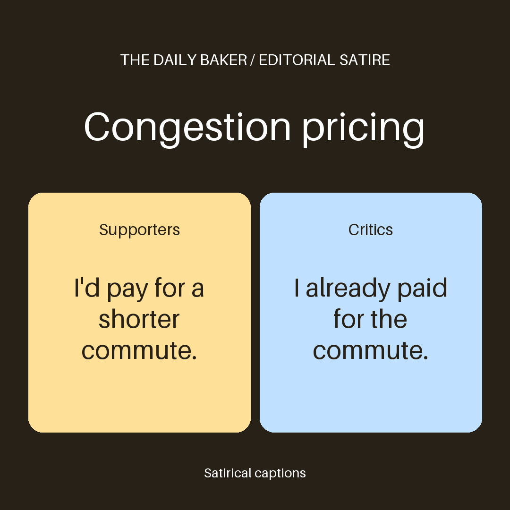

Congestion pricing
7d58a8b4afb002ae · Pending - Supporters · Demo outlet A · Congestion pricing cuts congestion
Synthetic coverage for a local demo.
- Critics · Demo outlet B · Congestion pricing is unfair to drivers
Synthetic coverage for a local demo.
Editorial satire | Congestion pricing — Supporters and Critics.